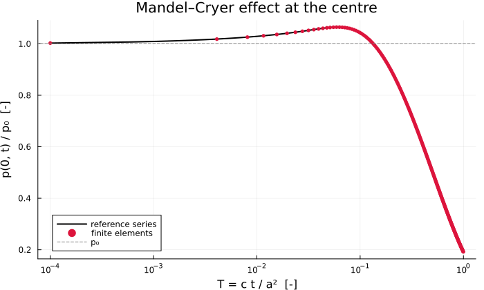
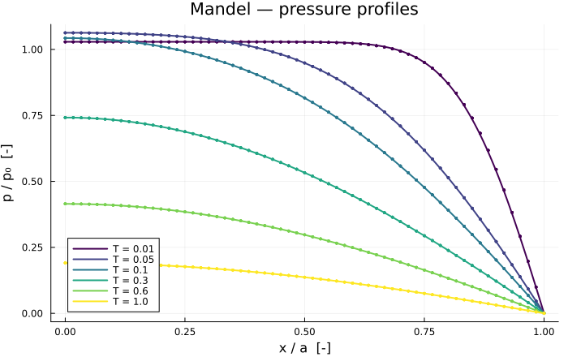

Mandel's Problem
The benchmark that separates a genuinely coupled poroelastic solver from one that merely solves two equations side by side. A rectangular sample is squeezed between two rigid, frictionless, impermeable plates and drained through its lateral faces. The pore pressure at the centre does not decay: it rises above its initial value before falling — the Mandel–Cryer effect (Mandel, 1953).
The overshoot is produced by the rigidity of the plates. As the edges drain, the material there stiffens (drained response) while the centre is still undrained and soft, so the plate transfers load towards the centre and raises the pressure there. A solver that gets the coupling term wrong reproduces a monotone decay and looks plausible — which is exactly why this case is worth the trouble.
Problem
A sample $-a \le x \le a$, $-b \le y \le b$ in plane strain. At $t = 0$ a constant vertical force is applied through rigid plates at $y = \pm b$; the faces $x = \pm a$ are drained and traction-free. Only a quarter is meshed, $x \in [0, a]$, $y \in [0, b]$, with symmetry conditions on the two inner edges.
| Boundary | Condition |
|---|---|
| $x = 0$ | symmetry: $u_x = 0$, no flow |
| $y = 0$ | symmetry: $u_y = 0$, no flow |
| $x = a$ | drained $p = 0$, traction free |
| $y = b$ | rigid plate: $u_y$ uniform but unknown, carrying the total force $F$ |
The rigid plate is the whole difficulty. Its displacement is not prescribed and not free either: every node on the top edge must share one unknown. That is imposed here with Ferrite affine constraints tying each top $u_y$ to a single master dof, on which the resultant force is applied.
Reference solution
With $\alpha_n$ the positive roots of
\[\tan \alpha_n = \frac{1 - \nu}{\nu_u - \nu}\,\alpha_n\]
the pore pressure is (Cheng and Detournay, 1988)
\[p(x, t) = \frac{2 F B (1 + \nu_u)}{3a} \sum_{n=1}^{\infty} \frac{\sin \alpha_n}{\alpha_n - \sin\alpha_n \cos\alpha_n} \left[\cos\!\left(\frac{\alpha_n x}{a}\right) - \cos\alpha_n\right] \exp\!\left(-\frac{\alpha_n^2 c\, t}{a^2}\right)\]
and the initial value is uniform, $p_0 = F B (1 + \nu_u) / (3a)$.
Because $(1-\nu)/(\nu_u-\nu) > 1$, the first root lies in $(0, \pi/2)$ and the remaining ones in $(n\pi, n\pi + \pi/2)$. That first root is the dominant term; omitting it — an easy mistake, since the later roots follow a tidier pattern — turns the solution negative and destroys the overshoot.
include("biot_common.jl")Main.uniform_scheduleModel
Parameters chosen for a pronounced effect: $B = 5/7$ and $\nu_u = 0.4$ against a drained $\nu = 0.2$. The overshoot grows with $\nu_u - \nu$, and vanishes when the two coincide.
const MANDEL_MATERIAL = HomogeneousBiot(;
E = 1.0e8, nu = 0.2, k = 1.0e-13, mu_l = 1.0e-3, b = 1.0, N = 7.2e-9,
)
const A_HALF = 1.0 # sample half-width [m]
const B_HALF = 1.0 # sample half-height [m]
const F_TOTAL = 1.0e6 # vertical force carried by the quarter [N/m]
"""Initial uniform pore pressure ``p_0 = F B (1+\\nu_u)/(3a)`` [Pa]."""
initial_pressure(m::HomogeneousBiot, F = F_TOTAL, a = A_HALF) =
F * skempton(m) * (1 + undrained_poisson(m)) / (3a)Main.initial_pressureReference series
"""
mandel_roots(m; nterms = 60)
Positive roots of ``\\tan\\alpha = \\frac{1-\\nu}{\\nu_u-\\nu}\\alpha``, one per interval
``((n-1)\\pi,\\ (n-1)\\pi + \\pi/2)``, by bisection.
"""
function mandel_roots(m::HomogeneousBiot; nterms = 60)
k = (1 - m.nu) / (undrained_poisson(m) - m.nu)
f(α) = tan(α) - k * α
roots = Float64[]
for n in 1:nterms
lo = (n - 1) * π + 1.0e-12
hi = (n - 1) * π + π / 2 - 1.0e-12
flo = f(lo)
f(lo) * f(hi) > 0 && continue
for _ in 1:200
mid = (lo + hi) / 2
if f(mid) * flo <= 0
hi = mid
else
lo = mid
flo = f(mid)
end
end
push!(roots, (lo + hi) / 2)
end
return roots
end
"""
mandel_pressure(m, roots, x, T; F, a) -> p [Pa]
Pore pressure at position `x` and dimensionless time `T = c t / a²`.
"""
function mandel_pressure(m::HomogeneousBiot, roots, x, T; F = F_TOTAL, a = A_HALF)
pref = 2 * F * skempton(m) * (1 + undrained_poisson(m)) / (3a)
s = 0.0
for α in roots
s += (sin(α) / (α - sin(α) * cos(α))) *
(cos(α * x / a) - cos(α)) * exp(-α^2 * T)
end
return pref * s
endMain.mandel_pressureSolving
"""
run_mandel(; m, nelx, nely, T_probe, T_start, dT)
Returns `(m, xs, T_probe, profiles, T_hist, p_centre)`. `profiles[i]` is the pressure at the
nodes `xs` at time `T_probe[i]`; `p_centre` is the pressure at `x = 0` at every step, which
is what exhibits the overshoot.
"""
function run_mandel(;
m = MANDEL_MATERIAL,
nelx = 60,
nely = 4,
T_probe = [0.01, 0.05, 0.1, 0.3, 0.6, 1.0],
T_start = 1.0e-4,
dT = 5.0e-4,
)
c = consolidation_coefficient(m)
t_of_T(T) = T * A_HALF^2 / c
grid = generate_grid(Quadrilateral, (nelx, nely), Vec(0.0, 0.0), Vec(A_HALF, B_HALF))
ip_geo = Lagrange{RefQuadrilateral, 1}()
ip_u = Lagrange{RefQuadrilateral, 1}()^2
ip_p = Lagrange{RefQuadrilateral, 1}()
dh = DofHandler(grid)
add!(dh, :u, ip_u)
add!(dh, :p, ip_p)
close!(dh)
qr = QuadratureRule{RefQuadrilateral}(2)
cv_u = CellValues(qr, ip_u, ip_geo)
cv_p = CellValues(qr, ip_p, ip_geo)
maps = node_dof_maps(dh, grid, (:u, 2), :p)
uy_dof, p_dof = maps.u, maps.p
coords = [node.x for node in grid.nodes]
tol = 1.0e-9
top_nodes = findall(cc -> abs(cc[2] - B_HALF) < tol, coords)
master_node = top_nodes[argmin(coords[n][1] for n in top_nodes)]
master_dof = uy_dof[master_node]
# Symmetry, drainage, and the rigid plate
ch = ConstraintHandler(dh)
add!(ch, Dirichlet(:u, getfacetset(grid, "left"), (x, t) -> 0.0, [1]))
add!(ch, Dirichlet(:u, getfacetset(grid, "bottom"), (x, t) -> 0.0, [2]))
add!(ch, Dirichlet(:p, getfacetset(grid, "right"), (x, t) -> 0.0))
for n in top_nodes
n == master_node && continue
add!(ch, AffineConstraint(uy_dof[n], [master_dof => 1.0], 0.0))
end
close!(ch)
update!(ch, 0.0)
n_loc = ndofs_per_cell(dh)
# The sparsity pattern must accommodate the affine coupling between master and slaves.
K1 = allocate_matrix(dh, ch)
K2 = allocate_matrix(dh, ch)
A = allocate_matrix(dh, ch)
as1 = start_assemble(K1)
as2 = start_assemble(K2)
ke1 = zeros(n_loc, n_loc)
ke2 = zeros(n_loc, n_loc)
for cell in CellIterator(dh)
reinit!(cv_u, cell)
reinit!(cv_p, cell)
biot_element_matrices!(ke1, ke2, m, cv_u, cv_p)
assemble!(as1, celldofs(cell), ke1)
assemble!(as2, celldofs(cell), ke2)
end
# The whole resultant is applied to the master dof: every top node shares its
# displacement, so the virtual work of the load is F · δu_master.
f_ext = zeros(ndofs(dh))
f_ext[master_dof] = -F_TOTAL
xs = [cc[1] for cc in coords]
centre_nodes = findall(cc -> abs(cc[1]) < tol, coords)
schedule = uniform_schedule(T_probe; T_start = T_start, dT = dT)
x = zeros(ndofs(dh))
apply!(x, ch)
profiles = Vector{Vector{Float64}}()
probes_left = sort(T_probe)
T_hist = Float64[]
p_centre = Float64[]
t_prev = 0.0
for T in schedule
t = t_of_T(T)
dt = t - t_prev
combine!(A, K1, K2, 1.0 / dt)
rhs = copy(f_ext)
mul!(rhs, K2, x, 1.0 / dt, 1.0)
apply!(A, rhs, ch)
x = A \ rhs
apply!(x, ch) # fill the tied dofs back in
t_prev = t
push!(T_hist, T)
push!(p_centre, sum(x[p_dof[n]] for n in centre_nodes) / length(centre_nodes))
if !isempty(probes_left) && isapprox(T, probes_left[1]; rtol = 1.0e-9)
push!(profiles, [x[p_dof[i]] for i in 1:getnnodes(grid)])
popfirst!(probes_left)
end
end
return m, xs, sort(T_probe), profiles, T_hist, p_centre
end
model, xs, T_probe, p_num, T_hist, p_centre = run_mandel()(BiotPoroelastic{Float64}(1.0e8, 0.2, 1.0e-13, 0.001, 1.0, 7.2e-9), [0.0, 0.016666666666666663, 0.033333333333333326, 0.04999999999999999, 0.06666666666666665, 0.08333333333333331, 0.09999999999999998, 0.1166666666666667, 0.1333333333333333, 0.15000000000000002 … 0.85, 0.8666666666666667, 0.8833333333333333, 0.9, 0.9166666666666666, 0.9333333333333333, 0.95, 0.9666666666666667, 0.9833333333333333, 1.0], [0.01, 0.05, 0.1, 0.3, 0.6, 1.0], [[342893.9498329918, 342893.9497657263, 342893.94954645284, 342893.94911848864, 342893.94837222964, 342893.947118915, 342893.94504609617, 342893.9416451802, 342893.9360956937, 342893.9270823205 … 246676.1746365094, 227469.40252878258, 205862.70582622138, 181890.88350582635, 155665.47283479123, 127377.97380453748, 97298.22163190207, 65767.53867512791, 33186.791061002485, 0.0], [354273.01922553463, 354256.6259118312, 354207.1366951894, 354123.6217873596, 354004.5250516117, 353847.6544404591, 353650.1689528984, 353408.56245557364, 353118.6448103759, 352775.52084846556 … 132736.64136536876, 119074.10235342623, 105064.75437853514, 90737.91787744519, 76125.1345317818, 61259.934292035134, 46177.57585473893, 30914.763920894682, 15509.34701225863, 0.0], [347589.2279008624, 347518.2523514273, 347305.11649114854, 346949.19398396293, 346449.4452664756, 345804.42403313005, 345012.2862954117, 344070.8019944907, 342977.3691400565, 341729.03044085915 … 99498.10319913764, 88931.02870568268, 78213.18751407895, 67356.30570170234, 56372.54094457551, 45274.43489798573, 34074.863002348204, 22786.982063930944, 11424.175980603968, 0.0], [247342.50758246967, 247262.1141203986, 247020.9734184138, 246619.2045298738, 246057.0058791578, 245334.6552643716, 244452.50986020901, 243411.00622004308, 242210.66027607975, 240852.06733614963 … 60385.4184889483, 53875.51502021991, 47307.164591287365, 40683.9847160875, 34009.62659157058, 27287.772646626512, 20522.13405222481, 13716.448197186743, 6874.476134102128, 0.0], [138325.01748055883, 138279.72813674886, 138143.88451922624, 137917.55985658418, 137600.8761527184, 137194.00412121214, 136697.16309352248, 136110.62090101847, 135434.69373093016, 134669.74595628466 … 33660.71240323508, 30030.75209462906, 26368.60115625099, 22676.234296147755, 18955.64252076941, 15208.832060704483, 11437.82328816721, 7644.6496268371175, 3831.3564546289044, 0.0], [63654.10094175614, 63633.259375003596, 63570.745912289305, 63466.59426018625, 63320.86057612104, 63133.62343809589, 62904.98380231924, 62635.06494877199, 62324.01241473573, 61971.99391632127 … 15489.77389727358, 13819.36026220486, 12134.133840295857, 10435.003287225185, 8722.884755628393, 6998.701401117671, 5263.382884524724, 3517.864870643803, 1763.0885237218738, 0.0]], [0.0001, 0.0006000000000000001, 0.0011, 0.0016, 0.0021, 0.0026, 0.0031, 0.0036, 0.0041, 0.0046 … 0.9956, 0.9961, 0.9966, 0.9971, 0.9976, 0.9981, 0.9986, 0.9991, 0.9996, 1.0], [334210.78809155716, 335480.4126774059, 336328.9573532585, 337000.405302955, 337572.1066708248, 338078.34583830996, 338537.56103648373, 338960.94587223604, 339355.8778771028, 339727.51586631674 … 64199.88506611685, 64137.6297627382, 64075.43482897741, 64013.300206286054, 63951.22583618978, 63889.21166025118, 63827.25762011027, 63765.363657441005, 63703.52971399535, 63654.10094174091])Results
using Plots
roots = mandel_roots(model)
p0 = initial_pressure(model)
@printf("Skempton B : %.6f\n", skempton(model))
@printf("Undrained ν_u : %.6f (drained ν = %.3f)\n", undrained_poisson(model), model.nu)
@printf("Diffusivity c : %.6e m²/s\n", consolidation_coefficient(model))
@printf("Initial pressure p₀: %.6e Pa\n", p0)
@printf("First five roots : %s\n", join(round.(roots[1:5]; digits = 5), ", "))
println()Skempton B : 0.714286
Undrained ν_u : 0.400000 (drained ν = 0.200)
Diffusivity c : 6.172840e-03 m²/s
Initial pressure p₀: 3.333333e+05 Pa
First five roots : 1.39325, 4.65878, 7.82203, 10.97279, 14.11946The Mandel–Cryer overshoot
The quantity that matters. A monotone curve here would mean the coupling is wrong.
p_centre_ref = [mandel_pressure(model, roots, 0.0, T) for T in T_hist]
i_peak = argmax(p_centre)
i_peak_ref = argmax(p_centre_ref)
@printf("numerical peak : p/p₀ = %.5f at T = %.4f\n", p_centre[i_peak] / p0, T_hist[i_peak])
@printf("reference peak : p/p₀ = %.5f at T = %.4f\n", p_centre_ref[i_peak_ref] / p0, T_hist[i_peak_ref])
@printf("overshoot : %.2f %% above p₀\n", 100 * (p_centre_ref[i_peak_ref] / p0 - 1))
println()
plt_hist = plot(
T_hist, p_centre_ref ./ p0;
xlabel = "T = c t / a² [-]", ylabel = "p(0, t) / p₀ [-]",
title = "Mandel–Cryer effect at the centre",
label = "reference series", lw = 2, color = :black,
xscale = :log10, legend = :bottomleft, size = (700, 420),
)
plot!(
plt_hist, T_hist[1:8:end], (p_centre ./ p0)[1:8:end];
seriestype = :scatter, ms = 3, mswidth = 0, color = :crimson, label = "finite elements",
)
hline!(plt_hist, [1.0]; ls = :dash, color = :grey, label = "p₀")
plt_hist
Error against the reference
println(" T | L2 error | L∞ error [Pa]")
println("-"^44)
errors = Float64[]
for (T, pn) in zip(T_probe, p_num)
ref = [mandel_pressure(model, roots, x, T) for x in xs]
e2 = norm(pn .- ref) / norm(ref)
push!(errors, e2)
@printf(" %8.4f | %.3e | %10.2f\n", T, e2, maximum(abs.(pn .- ref)))
end
println("-"^44)
@printf("worst relative L2 error: %.3e\n", maximum(errors)) T | L2 error | L∞ error [Pa]
--------------------------------------------
0.0100 | 2.404e-03 | 2162.02
0.0500 | 7.946e-04 | 427.84
0.1000 | 4.918e-04 | 205.38
0.3000 | 3.131e-04 | 70.80
0.6000 | 5.484e-04 | 75.85
1.0000 | 8.609e-04 | 54.78
--------------------------------------------
worst relative L2 error: 2.404e-03Pressure profiles
plt = plot(;
xlabel = "x / a [-]", ylabel = "p / p₀ [-]",
title = "Mandel — pressure profiles",
legend = :bottomleft, size = (700, 440),
)
xfine = range(0, A_HALF; length = 300)
order = sortperm(xs)
palette = cgrad(:viridis, max(length(T_probe), 2); categorical = true)
for (i, (T, pn)) in enumerate(zip(T_probe, p_num))
plot!(
plt, xfine ./ A_HALF, [mandel_pressure(model, roots, x, T) / p0 for x in xfine];
color = palette[i], lw = 2, label = "T = $T",
)
plot!(
plt, (xs ./ A_HALF)[order], (pn ./ p0)[order];
color = palette[i], seriestype = :scatter, ms = 2, mswidth = 0, label = "",
)
end
plt
Notes
- The rigid plate is the physics — replace the affine constraints by a uniform traction and the overshoot disappears entirely. The plate is what transfers load from the drained edges to the undrained core.
- The first root — with $(1-\nu)/(\nu_u-\nu) > 1$ there is a root in $(0, \pi/2)$, outside the $(n\pi, n\pi + \pi/2)$ pattern of all the others. It is the slowest-decaying and therefore dominant term.
- Series truncation at $T = 0$ — the expansion converges slowly at very small time; at $T \to 0$ the 60-term sum returns $0.9955\,p_0$ rather than $p_0$. The probe times start at $T = 0.01$, where truncation is far below the discretisation error.
- Sparsity with affine constraints — the matrix has to be allocated with
allocate_matrix(dh, ch), notallocate_matrix(dh), or the master–slave couplings have nowhere to go.